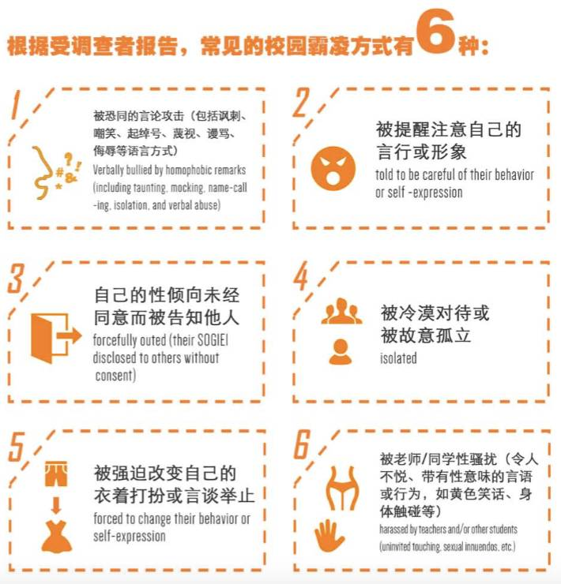
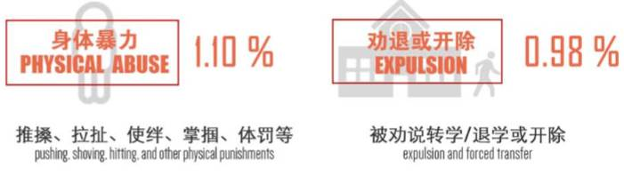
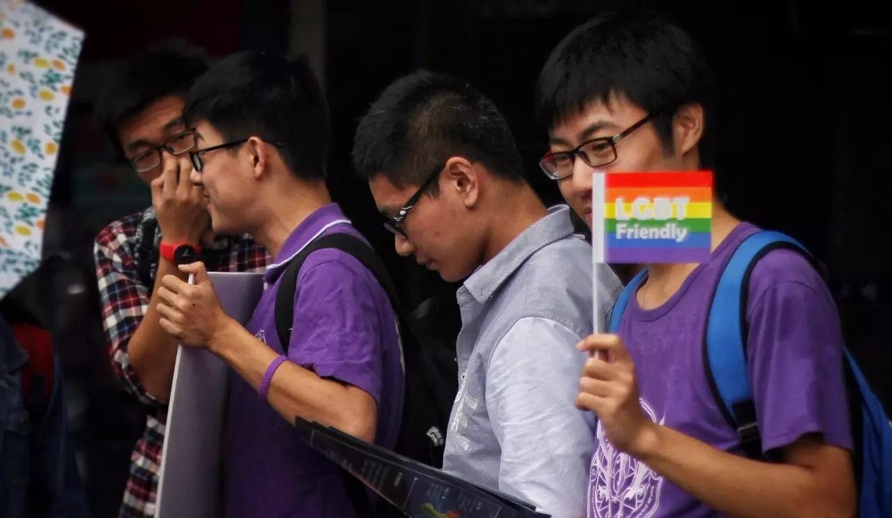
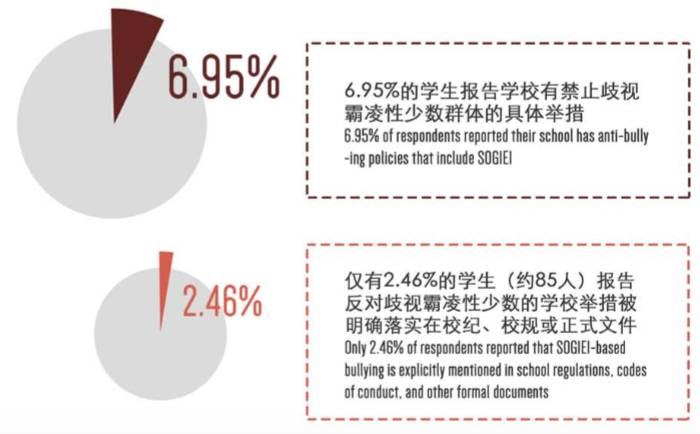
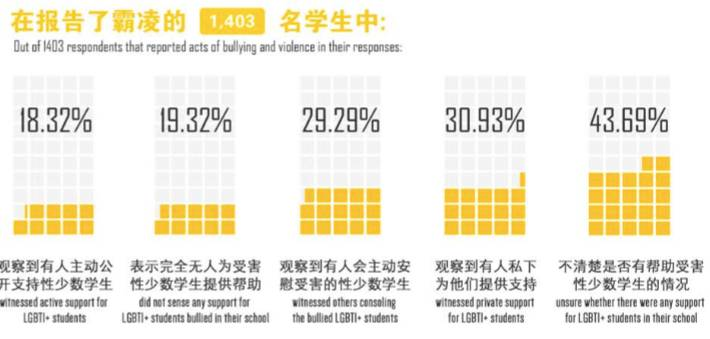

紫色校园 | Ta们是基于性与性别的校园欺凌当事人

去年的这个时候，我与圆桌骑士会的朋友一起讨论了浙大CC98缘分天空板块的歧视性版规，并呼吁大家借紫色校园日的机会支持校园LGBT群体。
在今年的紫色校园日来临之际（10月的第三个星期四），我希望能够回到紫色校园日的主旨，正式地审视基于性与性别的校园欺凌现象。

「大学里有校园欺凌吗？」
当我准备为这个话题写一篇文章时，得到的最多反馈是这样。通常认为，校园欺凌更多地发生中小学，在我们更有可能不具备完整的价值观与恰当的行为规范之时。在这种普遍观点下，校园欺凌与孩童间的嬉闹玩笑之间的界限变得模糊，加之在那个时期根本缺少“欺凌”的话语，我们对于欺凌的理解与记忆其实是陌生的。因此，首先不是大学是否存在校园欺凌的问题，校园欺凌本身是否存在似乎就是一个问题。
但是这种带着“特权”意味的问题很快被消解，我们通过社交软件询问了周围在校性少数群体成员对校园欺凌的记忆，得到了让人印象深刻的答案。

A
男 | 成长于华北中等城市
小学时候，因为行为举止较为阴柔，被同学嘲笑，曾被同学起外号为二椅子（方言中指两性人）,被以戏谑鄙视猎奇的口吻嘲笑，“像个女孩”。

B
女 | 成长于东部沿海城市
被男生站在背后意淫过，转身看到那个男生的神情和动作的时候被恶心到了。

C
男 | 成长于东部中等城市
“我...欺凌过别人”
“我们...会把班级最弱的男生摁在床上…把全身都扒光…”
“…还拍视频了”
“恩...高一”
“然后再教室…会扒掉他的衣服”
“只是觉得他比较好欺负…？”
“并且…他好像也挺开心的？”
“就超有成就感啊”

D
酷儿 | 成长于东部沿海小城
我是一个发育稍迟于他人的男性：我直到初三才进入变声期，大学才开始长胡子。在初一的时候，我是一个有着娃娃脸长相的男孩。当时我又很喜欢一部动画作品中一个长发的男性人物，便也想将头发留长一点，不用太长，到脖子就可以了。
令我难过的一段日子就此开始了。
班上的同学开始对我的外貌和举止指指点点；还有几个身高体壮的男生经常对我骂一些针对我的气质的脏话，并在体育课上欺负我。我不善于和人争吵，就默默地忍受着了。但没想到有一天体育课前，我被那些高大男生中的两个堵在教室，他们硬抓住我，猥琐地用他们的下体磨蹭着我，说着“你和女孩子真像”、“把你当女孩子使”之类的话；后来也经常被那些男生堵在厕所，被看下体之类。
这样的事情发生了很多很多次，我再坚强也是忍不住了——更何况我并不坚强。我便去和老师说。不曾想她回应我的话是：“快去把你的头发剪掉！校长上次来看的时候，也讲了关于你头发的意见。这头发比女生都长了！（事实上，我的头发也仅仅到下巴颏）怪不得这么受欺负。”
我很难过。
从那以后，我为了“迎合男性印象”、“少受欺负”，剪掉了头发，但是心中似乎有什么也被一起剪掉了。我现在留寸头；我至今仍然觉得长头发很好看，但由于初一那年的阴影，我怕是再留不出长发了。

笔者的身边朋友，在这一刻却突然成为校园欺凌的当事人。他们所接受/施加的欺凌，不仅包含言语与肢体暴力，也融合了性骚扰、猥亵；不仅来自同辈，也来自师长。这着实拓宽了我们对校园欺凌的广度与深度的想象。也许此刻你深藏在大脑某一处的记忆开始浮现，进而产生“哦...也许那也是欺凌”的想法，那么你和笔者同步了。
作为一个成长在四川、生理男性、成绩优秀、性别气质更符合传统的人，笔者其实比上述分享者享受着更多的“特权”，让我免受于直接的肢体暴力欺凌。当我检视这样的特权之时，发现实际上是我与公权力——老师、校领导的紧密联系而带来的红利。而在上述当事人的情景里，公权力的不作为实际上是造成校园欺凌被容忍和扩大、受害者被二次伤害的原因。当公权力漠视校园欺凌，甚至成为校园欺凌的施加者，这种现状自然地被默认为合理，自然地也不会存在于我们的话语结构中。因此，即便是我这样的没有遭受过直接肢体与言语欺凌的人，也曾在公权力较少到达的地方——互联网，因为性取向被议论、嘲讽，但是这些都不被当时的我视作欺凌，不曾打上欺凌的标签留存在记忆里。

·2016.10.20紫色校园日活动现场@浙大紫金港文广

中小学对欺凌的漠视，
加深了对高校校园欺凌的容忍度
如果对高中及以前校园欺凌的普遍性不再有异议，我们可以继续追问——高校中究竟存不存在校园欺凌？
我们需要先在校园欺凌的定义上达成共识。通常把校园欺凌分为言语欺凌、社会欺凌、物理欺凌。根据同语出品、酷儿论坛参与的《性与性别少数学生校园环境调查报告》显示，常见的基于性与性别的校园欺凌，包含以下几种：

在这当中，2、3、5是最超出我们传统校园欺凌定义的行为。一种常见的质疑是，如果是出于“善意”的提醒、纠正，为什么被当做是一种校园欺凌呢？为什么讨论性倾向“八卦”成为一种欺凌呢？实际上，校园欺凌本身并非一定是有意的；而且正如大众性与性别意识的缺失，基于性与性别的校园欺凌也并不常常被看见和承认。性倾向、性别认同和性别表达作为自身的一种个体自由，在面临别人的话语压力甚至暴力时，是会对性少数学生造成持久的心理压力的。
而在我们的收集中，也的确发现高校性少数学生面临的校园欺凌，主要就是上述几种不明显的、或是基于言语的形式。

甲 | 男 | 杭州上学
其实也不觉得这件事情值得被提，也没有因此而对那位同学有什么负面的评价，只是也许真的是那种所谓的漫不经心的玩笑却传达出了最大的恶意吧。先说一下，那个同学，其实他应该是 LGBT 友好人士吧，美国同性恋婚姻合法后，还一度将头像改成彩虹旗色。我平时爱将一件外套随意的搭在身上或是头上，喜欢在寝室的时候不把衣服当正常衣服穿，whatever，就有了他的“你要在东北这么穿就会被打”的言论。我能做的也就只是苦涩地，应付地笑笑罢了。其实，相比难过和气愤，更多的是无奈，对于一个很友好的同学一时玩笑而炮轰了两类人的无奈。其实我很想开个玩笑化解过去的，不过每次都是事时一脸蒙比，事后想着怎么反驳。

乙 | 男 | 杭州上学
那天进宿舍然后他们一群人围在一起。我进去以后，就是那种注目礼，然后有个人开口问我说你是不是0.5……我回了句你懂的很多啊……他说是他们班一个基佬告诉他的，那时候有种想弄死他的感觉……说的那个基佬。
就是觉得被冒犯了……他们有跑去和其他寝室的人说，或者在别人来我们寝室的时候就会直接说。不过也还好吧……自己不是很在意，毕竟没有在爸妈那被出柜。

丙 | 男 | 杭州上学
开学时被学长提醒过"Don’t act like a gay"。

丁 | 男 | 杭州上学
某老师在心理学通识课上，面对200个同学提出自己反对同性恋，发表同志反人类等言论。有个女生说要对别人有爱和包容，不能歧视别人。他说，爱他们，就要治疗他们。

戊 | 跨性别 | 杭州上学
关于戊学姐的自述，其实我从未敢直接向她询问。作为一名跨性别，一个性少数中的性少数，一个会有明显异于主流性别表达的人，在宿舍、厕所都十分二元化的校园环境中，她经历着怎样的嘲笑、污名与异样眼光呢？我也只能从她常常出现在众人聊天话题中、成为“奇葩”和一种传说来想象，或是听到她在社团新人大会发言后被小朋友群聊嘲笑的故事来感受。

在上面提到的那份报告里，7.77%的受访者来自浙江，而总共有1403名学生（40.64%）的受调查学生报告曾经遭受过基于性与性别的校园欺凌。与数据不同的是，我们临时找到的几名受访者，用真实的生命故事告诉我们，校园欺凌就在身边。
对，它们也许没有那么严重：

但是，要有多严重才能让校园欺凌被看到？要有多轻微，能够让校园欺凌被容忍？

·2016.10.20紫色校园日活动现场@浙大紫金港文广

如何迈向暴力零容忍？
需要支持。报告显示，来自校园官方的支持是有限的。虽然教育部在今年5月发布了《关于开展校园欺凌专项治理的通知》，但其主要集中在中小学，对大学校园鲜有涉及。

那么，同伴支持的力量就显得尤为重要，以性与性别少数群体为契机，希望各位能看到校园中面对身体状态、智力、族裔、心理健康等少数群体的偏见与欺凌，并向他们伸出援手。没有任何一种暴力可以被容忍，而不被承认的暴力更为可怕。

在紫色校园日即将到来的日子，我再次邀请各位，用各种方式向性少数群体发出支持之声，向基于性与性别的校园欺凌说不！
（点击蓝字查看）